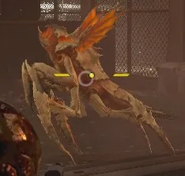

虫族入侵

A 虫族入侵 is the 终结族's version of a 增援 call-in. It occurs when a 终结族 spots a 绝地潜兵 and subsequently sends the signal.
In order to 呼叫 a 虫族入侵, one eligible 终结族 变更 to a specific stance, emit a unique 顺序 of calls and release 信息素 (可见 orange mist). There is an internal 冷却 which prevents the 呼叫 of 增援 until it expires. This is shorter the higher the 难度 of the 任务 is.
增援
List of 终结族 able to 呼叫 a 虫族入侵:
- 食腐虫 (and Spore Burst 食腐虫)
- 胆汁吐沫虫
- Pouncer
- Hunter (and Spore Burst Hunter, 捕食者 Hunter)
- 武士 (and Bile 武士, Spore Burst 武士, Alpha 武士)
- 虫族指挥官 (and 阿尔法指挥官)
- 虫窝护卫